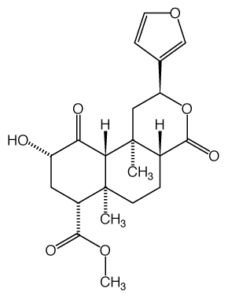
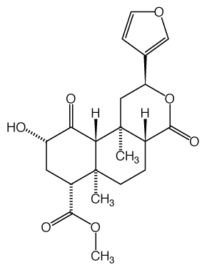

|
 |
Salvia divinorum and the Unique Diterpene Hallucinogen,
Salvinorin (Divinorin) A
Leander J. Valdés III*
(HTML rendering by Arachnophilia)
Journal of Psychoactive drugs 26 (3) (1994): 277-283
Abstract - Salvia divinorum is a vision inducing mint used by the Mazatec people of Oaxaca, Mexico. It is grown in California and other parts of the USA where it is employed as a legal hallucinogen. Traditional opinion has been that the plant has mild psychotropic activity, at best. However, when ingested in the correct manner, it is quite powerful. The fresh leaves are chewed as a quid and kept in the mouth. They may also be eaten raw or prepared as an aqueous infusion. When dried, they are smoked in the manner of marijuana. The neoclerodane diterpene, salvinorin A (also known as divinorin A), has been demonstrated in animals and humans to be its major active ingredient. Essentially inactive if taken orally, the compound is effective in doses of 200 to 500 mcg when smoked in a manner similar to cocaine free base. This makes salvinorin A the first documented diterpene hallucinogen and the most potent naturally occurring hallucinogen thus far isolated. This is somewhat remarkable, since the compound is not an alkaloid. The article reviews the use of S. divinorum and its chemistry. It discusses the effects of the plant and salvinorin A in animals and humans, as well as their potentials to become drugs of abuse.
Keywords - diterpene, divinorin A, hallucinogen, Salvia divinorum, salvinorin A
------------------------------------------------------------
*SMP Research, P.O. Box 7705, Ann Arbor, Michigan 48107-7705
The author would like to thank Daniel Siebert, of the Ethnobotanical Research Institute, for making his manuscript on the effects of S. divinorum and salvinorin A available. I would also like to thank everyone cited with personal communications. I will forever owe Don Alejandro and Felipe and their families.
| |
 |
This is interesting, because testing of the compound in the open field indicated it had the relatively low potency of mescaline. We found that salvinorin A was insoluble in water; it had to be dissolved in corn oil and Tween-80 (a surfactant) before adding water to make an emulsion. The emulsion had to be shaken thoroughly before dosing each animal, as it would readily break (settle). It was administered by intraperitoneal injection (3.2 to 100 mg/kg of salvinorin A) and log-dose/response curves of measured behavioral parameters were satisfactory (Valdés 1983). In toxicity studies mice were dosed at 1 g/kg of salvinorin A (the limits of being able to make a serviceable preparation) and observed them for a week. All animals survived and appeared unharmed, but they were not autopsied (Valdés et al. 1987). It is obvious that salvinorin A is not absorbed in the gastrointestinal tract when taken orally, since it doesn't dissolve in aqueous solutions. From these animal studies one can conclude that the emulsion of the compound allows regular peritoneal absorption. The same might be true if it were given orally. Although not as potent as inhalation of the vaporized compound, the effects might last longer. Salvinorin B was inactive in animal testing. It is much more polar than salvinorin A. A combination of its being less likely to cross membranes and lack of a really good emulsion would account for these findings. It would not be surprising to find it active if vaporized and inhaled, but it would probably only be effective at much higher doses than salvinorin A.
The foliage of S. divinorum is prepared in various manners for use as a psychotropic agent. The dried leaves may be smoked like marijuana joints. Taking five or six rapid deep inhalations from one cigarette produces an effect similar to that of marijuana or taking the Salvia infusion. It has a duration of one to two hours (Ott 1993; Díaz 1975). The fresh leaves may be chewed and retained in the mouth. Blosser collected a strain of S. divinorum with leaves that are much less bitter than normal. His Mazatec informants made a "quid" of four to five pair of these fresh leaves and retained the juices in the mouth, which was more effective than ingesting them. This has been confirmed by other investigators, who have used the normal bitter strains. They state that the duration of such visions is from one to two hours (Siebert In press; Blosser 1993; Ott 1993).
The Mazatec most often take S. divinorum by eating the fresh leaves, or preparing an infusion from fresh foliage that has been crushed by hand or ground on a metate (a flat stone utensil). The effects of ingesting the leaves or imbibing the infusion are reported to be identical. Doses are similar, from 5 to 80 pairs of leaves. When taking fewer than 20 pairs, activity may be perceived to be minimal or non-existent. It is essential to understand that effects are readily offset by light and noise. Not taking this into consideration often leads the experimenter to believe that there are no effects or that they are mild and of short duration (Foster 1984; Valdés 1983; Hofmann 1980; Wasson 1978, 1963, 1962).
Field work has shown that under these necessary conditions of quiet and darkness, intense and long-lasting visions do occur (Valdés et al. 1987; Valdés, Díaz & Paul 1983; Valdés 1983). As part of a research project, and under the guidance of Don Alejandro and Filipe Vicente, the present author twice drank the infusion prepared from S. divinorum leaves; taking it also was Dr. José L. Díaz; Ara Paul observed. The Mazatecs ingest psychotropic plants only under certain ritualized circumstances. In this case, the Salvia potion was given to "study" the plant and become healers. Before each session Don Alejandro would spend the late afternoon and early evening relating tales of Mazatec curing and mythology (Incháustegui 1977). About 8:00 pm he prepared the infusion by crushing the leaves in water as described above. After it was made, it had a good head of foam, which he said was an indication of strength. He then offered ceremonial prayers for each of us asking God and various Saints, as well as Mary (the patroness of the Salvia) to reveal the arts of healing and the medicinal herbs. The curandero spent an hour describing in detail the journey to heaven, the personages to ben encountered and the things to be seen. He told us not to be afraid, and emphasized that we had to speak out our visions (Wasson et al. 1974). Afterwards, we were to follow a special "diet" for four days to two weeks. Just before we took the preparation he performed a limpia (ritual cleansing) with piciete (a mixture of tobacco and lime) and incense. This was for protection on our journey and to help us in our learning. The first time we drank the infusion, he took it also, so he could "watch over us."
For my first encounter with las hojas de la Pastora, I was given a beginner's dose prepared from 20 pairs of leaves. I had a few minor experiences at first, but 45 minutes after drinking the preparation I felt myself flying through pitch black space past various brightly colored objects. I came to one of them. It turned out to be a Mazatec village and I viewed it from above, as if from a hill. It appeared to be almost real, although the colors were somewhat emphasized. There were shapes like pillars of kaleidoscopic smoke at the sides of some of the houses. Then I began to recede from the apparition. I did not speak out as I was instructed to. An hour after we started, Don Alejandro went outside and vomited, indicating it would stop his visions. For the next hour he listened to what we had seen and then related his visions while commenting on ours. He told me it was necessary to speak out. We then went to sleep and arose the following morning at 4:30 am in good spirits.
My second experience occurred about six months later. Again, Díaz also took the infusion, while Paul tape recorded the session (Valdés, Díaz & Paul 1983). Don Alejandro's preparations were much like that for the earlier session, except that my drink was made from 50 pairs of leaves. This time the curandero felt he did not need join us. He was a maestro, one who could journey to heaven and talk to God and the Saints without resorting to the psychotropic plants (Incháustegui 1977). Felipe told us that his father had a direct access to God in Heaven. It was the spiritual version of a long-distance telephone call. We drank the infusion at 9:00 pm. Unfortunately the village was extremely noisy that evening, especially the continual barking of the dogs. After about 15 minutes, we began to have visions. This time I spoke mine out, alternating between English and Spanish, which helped to fix them in my mind. Díaz spoke first and mentioned flowers. I then saw eidetic images that evolved to plants and flowers. These later became giant fruits and seeds. At the same time I felt that I was twisting inside my body as well as spinning around. I saw a burning cross with two horizontal rays. It stopped flaming and began to emit light. Suddenly I seemed to be very heavy, as though something were pushing me into the bed. My arms felt sore. Later I saw what looked like a darkened picture in black and white. Díaz apologized to Don Alejandro for our inability to see the religious figures the curandero had described. My vision then changed back to color, with praying figures resembling those seen in Mexican churches. They were faceless and their clothing was covered with gold. The image of a jewel-encrusted single-rayed cross appeared. It converted itself slowly back and forth to a sword. In the center of the image I could see animals, plants and people. If the vision started to change or disappear, I could concentrate and bring it back. The last image was that of a castle that was transformed into a Byzantine church. Hooded, faceless, monklike figures marched around it.
About 50 minutes had gone by and Felipe suddenly stopped the session. Don Alejandro told him that there was too much noise for a meaningful experience. As we left the bedroom, Díaz and I staggered and stumbled. The tape recording later confirmed that our speech was slurred and we spoke in awkward patterns, although we both felt quite alert. Díaz said that it was as if the body were intoxicated, but the mind wasn't. Don Alejandro spent an hour discussing our visions with us. He said that once we returned to the motel where we were staying, they would come back and last throughout the night. With more experience, we would begin to understand the use of the plant and the ways of healing. We could continue "studying" on our own. The curandero cautioned that Paul should drive back. During the return journey, in the quiet darkness of the car, the imagery returned. I saw the Virgin of Guadalupe. If the vision began to fade, I could will it back. We returned to the well-lit motel where there was music and noise. I thought the experience was over and things had returned to normal. Díaz felt cold and wrapped himself in a sarape (he noted that this had happened on other occasions when he took the infusion). We ate a light supper, showered, turned out the light, and went to bed. It was 11:30, some 2.5 hours after I first drank the potion. In the motel room, the imagery came back stronger than ever. Even though I didn't speak out, I saw a pulsating purplish light that changed to an insect-like shape, perhaps a bee or a moth, and then into a pulsating sea anemone. It expanded into a desert full of prickly pear cacti, and remained so for several minutes. During the first session and throughout the night, my visions had all appeared to be something like a cross between a silent moving picture and a cartoon. I felt myself to be an observer of these mute visions, rather than being an actual part of them. Suddenly, however, I was in a broad meadow with brightly colored flowers. I had just crossed a stream by way of a small wooden bridge. Next to me was something that seemed to be the skeleton of a giant model airplane made of rainbow colored inner tubing. The sky was bright blue and I could see a woods in the distance. I found myself talking to a man in a shining white robe who was either shaking my hand, or else holding on to it. It was an amazing hallucination, as I truly believed I was in the meadow. It was not like a dream. After a few moments the desert landscape returned and I slowly went to sleep after an hour or so. I rose early the next morning, feeling no adverse effects.
It is important to again emphasize that quiet and darkness are essential to a complete visionary experience with the Salvia infusion. This is probably true with all methods of taking the plant, including smoking the leaves. Only on inhalation of the vaporized compound may this be unnecessary. Felipe paraphrased his father's explanation of the potion's mechanism of action as follows, " What happens to the soul when one drinks la María (their name for the infusion) is that it has so much strength that one is left as if in a faint. And, therefore, a person becomes intoxicated when la María enters them, along with the prayers of my father and the words of Christ. It really isn't alcohol, however. You go into a 'delicate (special)' state... At times one becomes half-drunk, but with the result that what they are experiencing will be engraved on their mind." It is obvious that Don Alejandro realized the importance of ritual and expectation to the visionary experience. Speaking out helps fix it in the mind.
During the two sessions, Díaz and I felt mental sensations that included flying, floating, traveling rapidly through space, twisting and spinning, as well as a heaviness or lightness of the body. Physically, we had slurred speech and awkward sentence patterns. We both had a normal pupillary response to a flashlight shined in our eyes by Paul. Díaz later felt a chill that was accompanied by a lowered heart rate. After the sessions were over,and the light was turned on, we were dizzy and stumbled about when we tried to move around. Understanding this effect, Don Alejandro suggested that Paul do the driving. Although we recognized the physical incoordination, we felt that, mentally, we were in combined states of acute awareness and receptive minds. Interestingly, Siebert (1994) noted incoordination at high doses of vaporized and inhaled salvinorin A, but his subjects were extremely confused. The curandero spent hours before each session describing what we would see. This had a tremendous influence on my second experience. During this session Díaz mentioned plants and flowers. I then began to see them also. Later, he apologized to Don Alejandro for not seeing what was supposed to appear, especially the saints and other religious figures. As he finished speaking, I saw such imagery. When I described my vision of a castle, Díaz saw one also. The most amazing experience was that which happened to me on my return to the motel. Don Alejandro had described what the visionary journey would be like. I am sure that when I found myself in the meadow, talking to the man in white who fit the description of a saint, I was in the curandero's heaven. The hallucination was quite complete, being visual, oral, aural and tactile. Experiences for other ways of taking the leaves or salvinorin A should be similar, only varying in duration and degree of intensity.
Investigators' reports of the effects of chewing a quid, smoking the leaves, or inhaling the vaporized compound, say they last from 30 minutes to 2 hours, peaking at about 1 hour. The second time I took the infusion, made from 50 pairs of leaves, the effects lasted at least 4 hours before I went to sleep. Don Alejandro had said the visions would last all night. When he took the preparation with us, he went outside and vomited. He said this would end the effects. On making the infusion, he noted the head of foam, which indicated it would be quite potent. The Mazatec way of either grinding or crushing the leaves in water is a pharmaceutically elegant way of preparing a microsuspension or emulsion of salvinorin A. This explains the foam on the top of a "good" preparation. It is much more effective than the crude emulsion that was made to dose the mice (this emulsion might serve for oral dosing of the compound, however), for it disperses the compound without an accompanying settling out. Ingesting this infusion, one has visions that last for an extended period of time, as the drug is slowly and regularly released and absorbed through the stomach and gastrointestinal tract. Vomiting, therefore, will remove the remaining infusion and drug from the body, ending the experience. One can also understand why dried leaves aren't used by the Mazatecs. Drying drastically alters the chemical composition of the leaves, and the microsuspension/emulsion of salvinorin A will not be formed. Since salvinorin A is insoluble in water, the dry leaves will not serve to prepare an effective infusion.
From the above, it is apparent that both S. divinorum and salvinorin A are prime candidates to become drugs of widespread use once knowledge of their effects spreads. A small investment in fertilizer and solvents, with only a minimal need for mastery of laboratory technique, would make cultivation of S. divinorum and isolation of salvinorin A potentially much more attractive than trying to synthesize LSD or phencyclidine derivatives. Smoking the dried leaves, eating the fresh ones, or taking the infusion should not be major problems to treat in the emergency room. However the fraction of a milligram of salvinorin A needed to induce visions can easily lead to problems in measuring out accurate doses. Smoking the compound in the manner of cocaine free base might add to its mystique; being vaporized and inhaled means that the effects are almost immediate. Unfortunately the extreme potency of salvinorin A could readily lead to overdosing and its associated problems, especially as nothing is known about methods of treatment or the compound's metabolism in the body. Using medications might prove to be disastrous. There is a lot of research to be done on S. divinorum and its active ingredient.
REFERENCES
Aguirre Beltrán, G. 1973. Medicina y Magia, el Proceso de Aculturación en la Estructura Colonial. México, D.F.: Instituto Nacional Indigenista.
Anonymous. 1994. Salvia divinorum (communication). The Entheogen Review, 3(1): 11.
Anonymous. 1973. Legal Highs (Where to Obtain Them, How to Use Them, What Are Their Effects). San Francisco: Level Press.
Blosser, B. 1993. Department of Anthropology, Tulane University. Personal communication. November 29.
Brimblecombe, R.W. & Green, A.L. 1962. Effects of Monoamine Oxidase Inhibitors on the Behavior of Rats in Hall's Open Field. Nature (London), 194: 983.
Díaz, J.L. 1979. Ethnopharmacology and Taxonomy of Mexican Psychodysleptic Plants. Journal of Psychedelic Drugs, 11 (1-2): 71-101.
Díaz, J.L. 1975. Etnofarmacología de Algunos Psicotrópicos Vegetales de México. In J.L. Díaz (Ed.) Etnofarmacología de Plantas Alucinójenas Latinoamericanas. México, D.F.: Centro Mexicano de Estudios en Farmacodependencia (CEMEF) Cuadernos Científicos, 4.
Emboden, W. 1980. California State University, Northridge. Personal communication. March 29.
Epling, C. 1939. A Revision of Salvia, Subgenus Calosphace. Feddes Repertorium Specierum Novarum Regni Vegetabilis, Beihefte 110: 1-380.
Epling, C. & Játiva-M., C. 1962. A new Species of Salvia from Mexico. Botanical Museum Leaflets, Harvard University, 20: 75-76.
Foster, S. 1984. Herbal Bounty. Salt Lake City: Peregrine Smith Books.
Grubber, H. 1973. Growing the Hallucinogens. San Francisco: High Times/Level Press.
Hofmann, A. 1990. Ride Through the Sierra Mazateca in Search of the Magic Plant Ska María Pastora. In: T.Riedlinger (Ed.) The Sacred Mushroom Seeker: Essays for R. Gordon Wasson. Portland, Oregon: Dioscorides Press.
Hofmann, A. 1980. LSD, my Problem Child. New York: McGraw-Hill.
Hofmann, A. 1964. Mexicanische Zauberdrogen und ihre Wirkstoffe. Planta Medica, 12: 341-52.
Incháustegui, C. 1977. Relatos del Mundo Mágico Mazateco. México, D.F.: Instituto Nacional de Antropología e Historia.
Koreeda, M.; Brown, L. & Valdés III, L.J. 1990. The Absolute Stereochemistry of Salvinorins. Chemistry Letters 2015-18.
Ortega, A.; Blount, J.F. & Marchand, P. 1982. Salvinorin, a New trans-Neoclerodane Diterpene from Salvia divinorum (Labiatae). Journal of the Chemical Society, Perkin Transactions I: 2505-8.
Ott, J. 1994. Natural Products Company, Occidental, California. Personal communication. February 13.
Ott, J. 1993. Pharmacotheon: Entheogenic Drugs, Their Sources and History. Kennewick, Washington: Natural Products Company.
Savona, G.; Paternostro, M.P.; Piozzi, F. & Hanson, J.R. 1979. Splendidin, a New trans-Clerodane from Salvia splendens. Journal of the Chemical Society, Perkin Transactions I, 533-34.
Savona, G.; Paternostro, M.P.; Piozzi, F.; Hanson, J.R.; Hitchcock, P.B. & Thomas, S.A. 1978. Salviarin, a New Diterpenoid from Salvia splendens, Journal of the Chemical Society, Perkin Transactions I, 643-46.
Schultes, R.E. & Hofmann, A. 1980. The Botany and Chemistry of Hallucinogens. 2nd ed. Springfield, Illinois: Charles C. Thomas.
Siebert, D.J. In press. This was a draft of: Siebert, D.J. (1994). Salvia divinorum and Salvinorin A: New Pharmacologic Findings. Journal of Ethnopharmacology 43: 53-56.
Siebert, D.J. 1994. Ethnobotanical Research Institute, Los Angeles, California. Personal communication May 7.
Valdés, L.J., III. 1986. Loliolide from Salvia divinorum. Journal of Natural Products, 49: 171.
Valdés, L.J., III. 1983. The Pharmacognosy of Salvia divinorum (Epling and Játiva-M.): an Investigation of Ska María Pastora. Ph.D. Diss., University of Michigan, Ann Arbor.
Valdés, L.J., III.; Butler, W.M.; Hatfield, G.M.; Paul, A.G. & Koreeda, M. 1984. Divinorin A, a Psychotropic Terpenoid, and Divinorin B from the Mexican Hallucinogenic Mint Salvia divinorum. Journal of Organic Chemistry, 49: 4716-20.
Valdés, L.J., III.; Díaz, J.L. & Paul, A.G. 1983. Ethnopharmacology of Ska María Pastora (Salvia Divinorum, Epling and Játiva-M.). J. Ethnopharmacology: 7: 287-312.
Valdés, L.J., III.; Hatfield, G.M.; Koreeda, M. & Paul, A.G. 1987. Studies of Salvia divinorum (Lamiaceae), an Hallucinogenic Mint from the Sierra Mazateca in Oaxaca, Central Mexico. Economic Botany, 41: 283-291.
Verity, D.S. 1980. UCLA Botanical Gardens-Herbarium. Personal communication. August 7. Salvia divinorum acquisitioned in 1963, #63-104.
Wasson, R.G. 1978. Danbury, Connecticut. Personal communication. July 1.
Wasson, R.G. 1963. Notes on the Present Status of Ololiuhqui and the Other Hallucinogens of Mexico. Botanical Museum Leaflets, Harvard University, 20: 161-193.
Wasson, R.G. 1962. A new Mexican Psychotropic Drug from the Mint Family. Botanical Museum Leaflets, Harvard University,
20: 77-84.
Wasson, R.G.; Cowan, G.; Cowan, F. & Rhodes, W. 1974. María Sabina and her Mazatec Mushroom Velada. New York: Harcourt Brace Jovanovich, Inc.